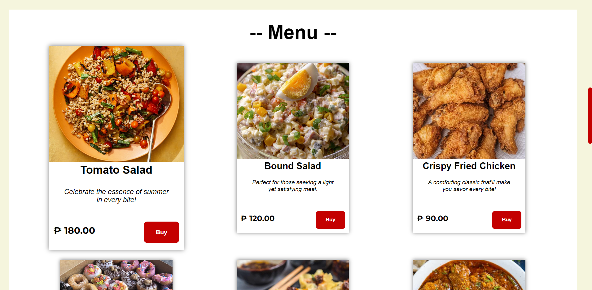

FEATURED WORKS
1 / 3
Restaurant Webpage Design
UI, UX, Design
Bio
Greetings, I'm Rafael Luis M. Cueva, currently immersed in my academic pursuit of a Bachelor of Science in Computer Science at Caraga State University. During my formative senior high school years at Mapua Malayan Colleges, I graduated with high honors, setting the foundation for my professional journey.
My fascination with the world of computers ignited at the age of 13, and since then, I've been on a journey of continuous exploration. From honing my skills in photo manipulation with tools like Photoshop to mastering the intricacies of video editing using Premiere Pro and After Effects, my technical prowess extends to the realm of home network security. This encompasses a comprehensive understanding of technologies such as pfSense, routers, MikroTik devices, and network switches.
In the professional landscape, I bring to the table not just academic rigor but also a practical understanding of diverse aspects of computer science. My proficiency in English, Tagalog, and Bisaya enhances my ability to communicate and collaborate effectively, making me a versatile asset in any professional setting.
Should you have any inquiries or find my skills aligning with your hiring needs, please feel free to reach out. You can contact me through my provided social links and contact information. I look forward to the possibility of connecting and exploring potential opportunities together.

Experiences
YouTube influencer
2016 - 2020
From 2016 to 2020, I operated a successful YouTube channel, building a substantial viewer base and cultivating a dedicated subscriber following. My expertise encompasses a comprehensive understanding of the YouTube algorithm and the entire video production process, from conceptualization to publication. As a versatile individual, I possess proficiency in creating various elements such as YouTube logos, thumbnails, and videos.
Website Designer (work immersion)
2022
I previously held a position at my school focused on Work Immersion, where I acquired valuable skills in web design and graphic design for webpages, as well as expertise in photo manipulation.
LET'S TALK ABOUT THE NEXT BIG THING.
Contact me through my socials or send an email to rafaelluiscueva545@gmail.com